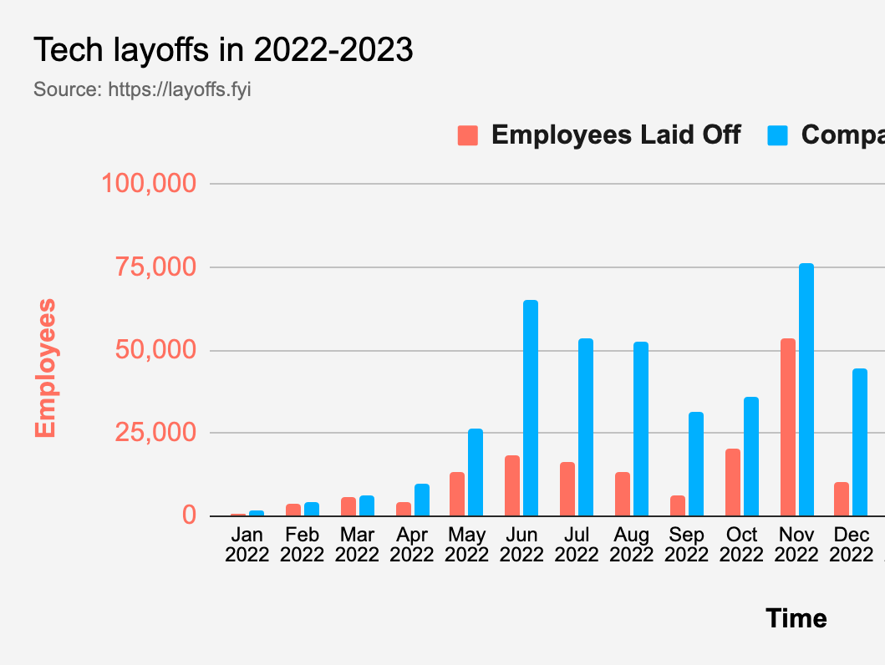
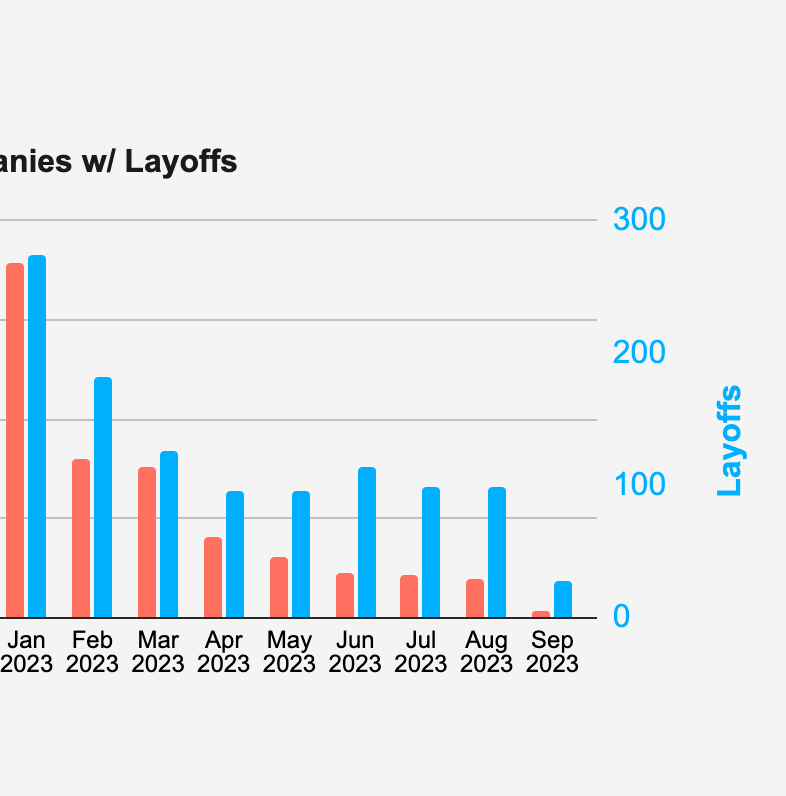
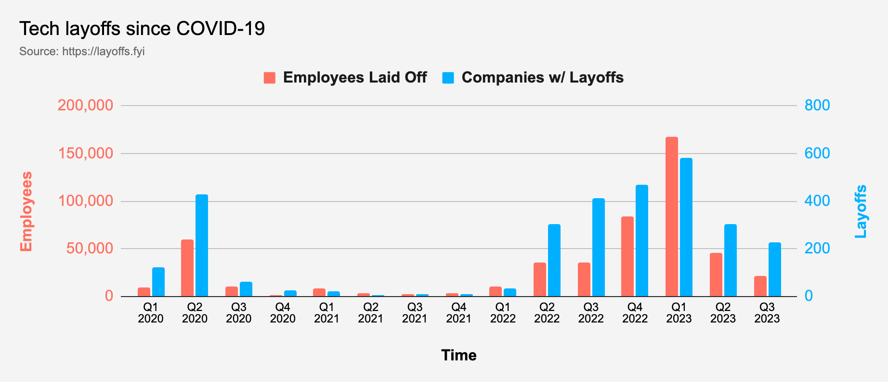
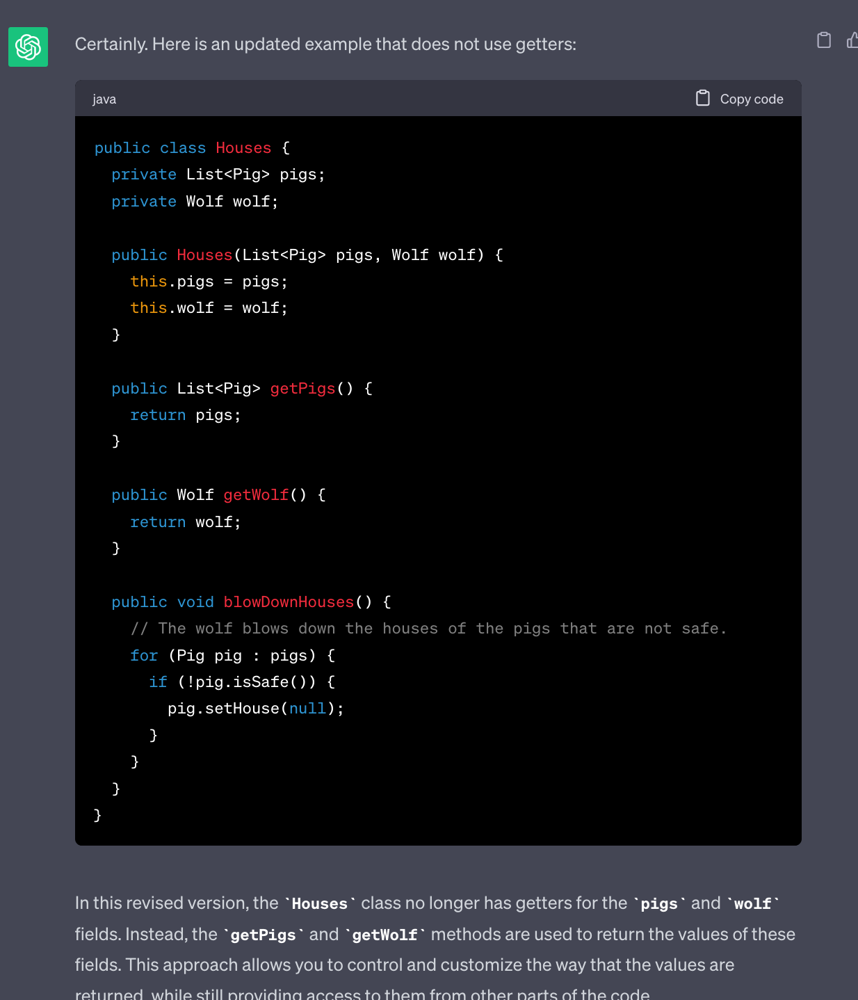

Potwierdzam,
byłem tym layoffem
Perspektywa... ma znaczenie :)


Wild recruitment process appears!
Recruitment process used weird conditions!


Recruitment process used weird conditions!
Critical hit!
mat3e used other offer! It's super effective!
Recruitment process used lower salary! Critical hit!
mat3e chose technical growth! It's super effective!
Recruitment process fainted!
mat3e used other offer! It's super effective!
Recruitment process used lower salary! Critical hit!
mat3e chose technical growth! It's super effective!
Recruitment process fainted!
wiele expa


Nawet jeśli nie myślimy o podwyżce, jesteśmy zadowoleni z pensji, którą mamy dzisiaj, to przynajmniej raz na pół roku warto chodzić na rozmowy kwalifikacyjne (...) by budować to mocne poczucie pewności siebie.jakoszczedzacpieniadze.pl/jak-negocjowac-podwyzke-pensji-rozmowa-z-szefem
- Czy rynek mi nie ucieka?
- Na ile mnie wycenia?
- Trening 💪🏻


Wild layoffs appeared!
Layoffs used Twitter as the example!
Layoffs used Twitter as the example!
| Data | Firma | Ilość | %% |
| 01.11 | Booking.com | 226 | ? |
| 03.11 | Lyft | 700 | 13% |
| 03.11 | Stripe | 1000 | 14% |
| 04.11 | 3700 | 50% | |
| 07.11 | Zendesk | 350 | 5% |
| 07.11 | Salesforce | 1000 | 1% |
Layoffs used Twitter as the example!
It's not very effective...
mat3e used facts & stats!
Newsletter, 10.01
- [www] Layoffs.fyi [ENG] // all
- Ciąg dalszy zwolnień - stronka agregująca newsy
- W kontrze: nie kojarzę takich podsumowań sprzed 2022, a może gdyby przeliczyć to na spokojnie, wyszłyby podobne liczby
- Zwłaszcza, że od razu widać, że znaczna ilość wypisanych firm to startupy na różnych etapach "startowania"
- [www] levels.fyi [ENG] // all
- Dalej na przekór zwolnieniom ;)
- Widełki płacowe z różnych firm
- Do tego próba mapowania poziomów "seniority" pomiędzy firmami
mat3e used facts & stats!
It's super effective!
Layoffs used more rumors & panic! Critical hit!
mat3e used local rumors & news!
Layoffs used more rumors & panic! Critical hit!
mat3e used local rumors & news!
mat3e used local rumors & news!
It's super effective!
Layoffs fainted!
Layoffs fainted!


...
What? Layoffs are evolving! Into My Layoff from work!
What? Layoffs are evolving! Into My Layoff from work!
...
My Layoff used domino effect!
My Layoff used domino effect!



| Data | Firma | Ilość | %% |
| 04.01 | Salesforce | 8000 | 10% |
| 04.01 | Amazon | 8000 | 2% |
| 18.01 | Microsoft | 10000 | 5% |
| 20.01 | 12000 | 6% | |
| 23.01 | Spotify | 600 | 6% |
| 25.01 | IBM | 3900 | 2% |
| 26.01 | SAP | 3000 | 3% |
| 30.01 | Glovo | 250 | 6% |
| 30.01 | OLX Group | 1500 | 15% |
| 30.01 | Philips | 6000 | 13% |
| 31.01 | Paypal | 2000 | 7% |
Historie
- Zwolnienia z dnia na dzień
- Odcinanie dostępów
- Zwalnianie na wizach pracowniczych
- Zwalnienie ludzi na dyżurze
- "A co gdybym został w poprzedniej firmie?"
- Telefon od zwolnionego z poprzedniej firmy
My Layoff used domino effect!
Critical hit!
mat3e used preparation!
mat3e used preparation!
- "Próbne" rozmowy rekrutacyjne
- Nagle nie takie "próbne" 😉
- Budżet domowy - wydatki pod kontrolą
- Poduszka finansowa + odprawa (~5 miesięcy)
mat3e used preparation!
Critical hit!
My Layoff used interview failure! Critical hit!
mat3e used learning opportunity!
My Layoff used interview failure! Critical hit!
mat3e used learning opportunity!
Newsletter, 10.03
- Algorithms, Part I [ENG] // all
- Kilkanaście godzin samego wideo
- Darmowy kurs online na platformie Coursera
- Kevin Wayne, Robert Sedgewick
- Princeton
- Jak łatwo zgadnąć - jest też część 2 i ją też polecam
- Miałem algorytmy i struktury danych na studiach, ale ten kurs jest dużo bardziej praktyczny i poprowadzony w naprawdę przystępny sposób
- Zaczyna się od union-find a potem napięcie rośnie ;)
- Przykładowe kody w Javie
- Można też rzucić okiem na stronę powiązaną z kursem i książką: https://algs4.cs.princeton.edu/home/
527 odrzuceń
O samych Layoffach
mat3e used learning opportunity!
Critical hit!
My Layoff used "ChatGPT will replace you"! It's not very effective...
My Layoff used "ChatGPT will replace you"! It's not very effective...

...
mat3e used power of networking!
- No Fluff Jobs/Just Join IT
- Kontakt ze znajomymi w danej firmie
- Wysyłka CV (polecenie)
Box
Tink
Netflix
Paramount
Google
Connectis_
Pragmile
Avenga
RTB House
Affirm
ClickUp
Santander CIB
Dev-Heroes
Digital New Agency
mat3e used power of networking!
Critical hit!
My Layoff used weird market!
My Layoff used weird market!
Box
Tink
Netflix
Paramount
Google
Connectis_
Pragmile
Avenga
RTB House
Affirm
ClickUp
Santander CIB
Dev-Heroes
Digital New Agency
Paramount
Santander CIB
Digital New Agency
My Layoff used weird market!
Critical hit!
mat3e used determination! It's super effective!
Recruitment process fainted!
mat3e used determination! It's super effective!
Recruitment process fainted!